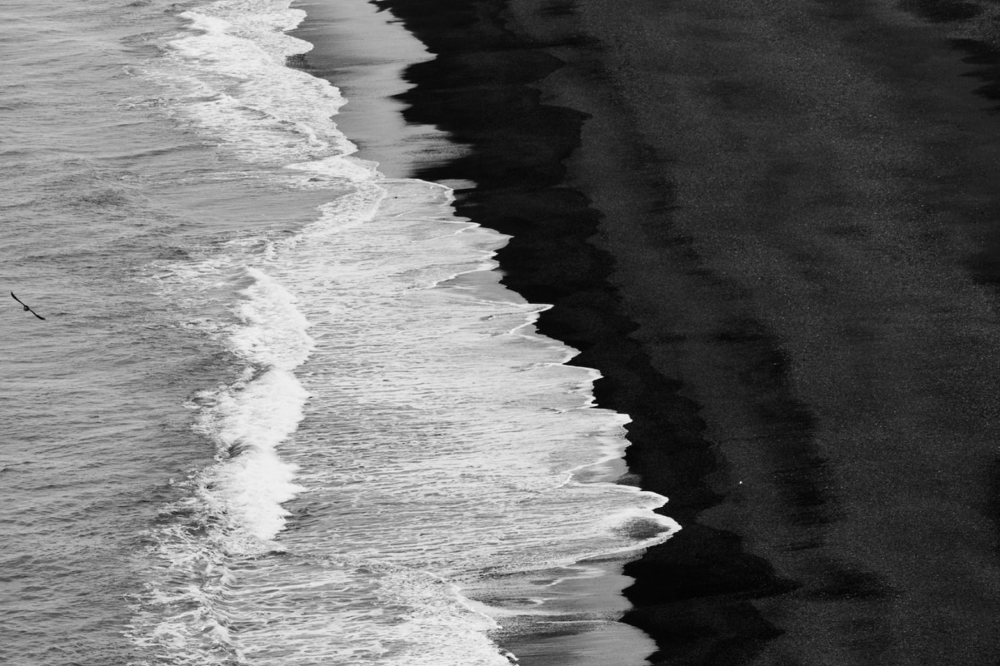

The shore path
Out through the gate by the Boat Room, along the sand to the rocks and back the same way. Flat, easy, and different every time the tide has been in.
An easy hour

Surroundings
A shore path, a headland, an estuary that empties twice a day, and a village with one shop that sells most things.
The place
The house sits where the estuary meets the open sea, with dunes on one side and a low headland on the other. Behind it the lane climbs to the village, then to the hill farms, then to nothing much at all.
It is a place for walking, swimming when you are brave, and watching the weather come in from a chair. The tide sets the timetable; we keep the tables pinned in the kitchen.
Out through the gate by the Boat Room, along the sand to the rocks and back the same way. Flat, easy, and different every time the tide has been in.
An easy hour
Up the lane, across the top field and down the far side to the cove, where the swimming is best. Some climbing, one stile, and a bench at the top for the view.
Most of a morning
The long one: along the shore, over the second headland and out to the light. Check the tide before you go, take a sandwich, and expect to come back by the road.
A full day, with the tide
Twenty minutes to the old jetty, where the birds come in as the light goes. The right walk after dinner, with a torch for the way back.
After dinner
Fog most mornings, gone by eleven. Lambs on the hill, the first swims for the determined, and the garden waking up before we do.
Long light and long tables. Supper is carried outside whenever the wind allows, and the shore path is busy with people who have found the cove.

The road in, the wind up, and the fire lit by four. Blackberries on the shore path, mushrooms in the top wood, and the best sunsets of the year.
Snow on the pines some years, rain on the windows most. Soup on the stove, the shore to yourselves, and the lighthouse turning across the Lantern Room wall.
Getting here
Most people come by the valley road, which follows the river down to the estuary and arrives at the house without warning. We will send directions for the last mile, which no map has yet got right, and we can meet trains at the station.
Ask for directionsThe book by the door
There is a notebook on the hall table where guests write down what they found: which pool was warm, where the seals were, whether the pub had the fish on. Add to it before you go. It is the most useful guide we have, and the only one we do not edit.